bootlm
Uses bootstrap to calculate confidence intervals (and p-values) for the
regression coefficients from a linear model and performs N-way ANOVA.
-- Function File: bootlm (Y, X)
-- Function File: bootlm (Y, GROUP)
-- Function File: bootlm (Y, GROUP, ..., NAME, VALUE)
-- Function File: bootlm (Y, GROUP, ..., 'dim', DIM)
-- Function File: bootlm (Y, GROUP, ..., 'continuous', CONTINUOUS)
-- Function File: bootlm (Y, GROUP, ..., 'model', MODELTYPE)
-- Function File: bootlm (Y, GROUP, ..., 'varnames', VARNAMES)
-- Function File: bootlm (Y, GROUP, ..., 'method', METHOD)
-- Function File: bootlm (Y, GROUP, ..., 'method', 'bayesian', 'prior', PRIOR)
-- Function File: bootlm (Y, GROUP, ..., 'alpha', ALPHA)
-- Function File: bootlm (Y, GROUP, ..., 'display', DISPOPT)
-- Function File: bootlm (Y, GROUP, ..., 'contrasts', CONTRASTS)
-- Function File: bootlm (Y, GROUP, ..., 'nboot', NBOOT)
-- Function File: bootlm (Y, GROUP, ..., 'clustid', CLUSTID)
-- Function File: bootlm (Y, GROUP, ..., 'blocksz', BLOCKSZ)
-- Function File: bootlm (Y, GROUP, ..., 'posthoc', POSTHOC)
-- Function File: bootlm (Y, GROUP, ..., 'seed', SEED)
-- Function File: STATS = bootlm (...)
-- Function File: [STATS, BOOTSTAT] = bootlm (...)
-- Function File: [STATS, BOOTSTAT, AOVSTAT] = bootlm (...)
-- Function File: [STATS, BOOTSTAT, AOVSTAT, PRED_ERR] = bootlm (...)
Fits a linear model with categorical and/or continuous predictors (i.e.
independent variables) on a continuous outcome (i.e. dependent variable)
and computes the following statistics for each regression coefficient:
- name: the name(s) of the regression coefficient(s)
- coeff: the value of the regression coefficient(s)
- CI_lower: lower bound(s) of the 95% confidence interval (CI)
- CI_upper: upper bound(s) of the 95% confidence interval (CI)
- p-val: two-tailed p-value(s) for the parameter(s) being equal to 0
By default, confidence intervals and Null Hypothesis Significance Tests
(NHSTs) for the regression coefficients (H0 = 0) are calculated by wild
bootstrap-t and so are robust when normality and homoscedasticity cannot
be assumed.
Usage of this function is very similar to that of 'anovan'. Data (Y)
is a numeric variable, and the predictor(s) are specified in GROUP (a.k.a.
X), which can be a vector, matrix, or cell array. For a single predictor,
GROUP can be a vector of numbers, logical values or characters, or a cell
array of numbers, logical values or character strings, with the same
number of elements (n) as Y. For K predictors, GROUP can be either a
1-by-K, where each column corresponds to a predictor as defined above,
an n-by-K cell array, or an n-by-K array of numbers or characters. If
Y, or the definitions of each predictor in GROUP, are not column vectors,
then they will be transposed or reshaped to be column vectors. Please the
demonstrations in the manual for examples:
https://gnu-octave.github.io/statistics-resampling/function/bootlm.html
Note that if GROUP is defined as a design matrix X, containing (one or
more) continuous predictors only, a constant term (intercept) should
not be included in X - one is automatically added to the model. For models
containing any categorical predictors, the 'bootlm' function creates the
design matrix for you. If you have already constructed a design matrix,
consider using the functions 'bootwild' and 'bootbayes' instead.
'bootlm' can take a number of optional parameters as name-value
pairs.
'[...] = bootlm (Y, GROUP, ..., 'varnames', VARNAMES)'
<> VARNAMES must be a cell array of strings with each element
containing a predictor name for each column of GROUP. By default
(if not parsed as optional argument), VARNAMES are
'X1','X2','X3', etc.
'[...] = bootlm (Y, GROUP, ..., 'continuous', CONTINUOUS)'
<> CONTINUOUS is a vector of indices indicating which of the
columns (i.e. predictors) in GROUP should be treated as
continuous predictors rather than as categorical predictors.
The relationship between continuous predictors and the outcome
should be linear.
'[...] = bootlm (Y, GROUP, ..., 'model', MODELTYPE)'
<> MODELTYPE can specified as one of the following:
o 'linear' (default): compute N main effects with no
interactions.
o 'interaction': compute N effects and N*(N-1) interactions
o 'full': compute the N main effects and interactions at
all levels
o a scalar integer: representing the maximum interaction
order
o a matrix of term definitions: each row is a term and
each column is a predictor
-- Example:
A two-way design with interaction would be: [1 0; 0 1; 1 1]
'[...] = bootlm (Y, GROUP, ..., 'method', METHOD)'
<> METHOD can be specified as one of the following:
o 'wild' (default): Wild bootstrap-t, using the 'bootwild'
function. Please see the help documentation below and in the
function 'bootwild' for more information about this method.
o 'bayesian': Bayesian bootstrap, using the 'bootbayes' function.
Please see the help documentation below and in the function
'bootbayes' for more information about this method.
Note that p-values are a frequentist concept and are only computed
and returned from bootlm when the METHOD is 'wild'.
'[...] = bootlm (Y, GROUP, ..., 'method', 'bayesian', 'prior', PRIOR)'
<> Sets the prior for Bayesian bootstrap. Possible values are:
o scalar: A positive real numeric scalar to parametrize
the form of the symmetric Dirichlet distribution. The
Dirichlet distribution is the conjugate PRIOR used to
randomly generate weights for linear least squares fitting
of the observed data and subsequently to estimate the
posterior for the regression coefficients by nonparametric
Bayesian bootstrap.
o 'auto': Sets a value for PRIOR that effectively incorporates
Bessel's correction a priori such that the variance of the
posterior (i.e. the rows of BOOTSTAT) becomes an unbiased
estimator of the sampling variance*. The calculation used for
'auto' is as follows:
PRIOR = 1 - 2 / N
For block or cluster bootstrap, N corresponds to the number
of blocks or clusters (i.e. the number of independent
sampling units).
The 'auto' setting is recommended but is only available
for Bayesian bootstrap of the estimated marginal means and
for the posthoc tests (not the regression coefficients).
The default value of PRIOR is the scalar: 1, which corresponds
to Bayes rule: a uniform (or flat) Dirichlet distribution
(over all points in its support). Please see the help
documentation for the function 'bootbayes' for more information
about the prior.
'[...] = bootlm (Y, GROUP, ..., 'alpha', ALPHA)'
<> ALPHA is numeric and sets the lower and upper bounds of the
confidence or credible interval(s). The value(s) of ALPHA must be
between 0 and 1. ALPHA can either be:
o scalar: Set the central mass of the intervals to 100*(1-ALPHA)%.
For example, 0.05 for a 95% interval. If METHOD is 'wild',
then the intervals are symmetric bootstrap-t confidence
intervals. If METHOD is 'bayesian', then the intervals are
shortest probability credible intervals.
o vector: A pair of probabilities defining the lower and upper
and upper bounds of the interval(s) as 100*(ALPHA(1))% and
100*(ALPHA(2))% respectively. For example, [.025, .975] for
a 95% interval. If METHOD is 'wild', then the intervals are
asymmetric bootstrap-t confidence intervals. If METHOD is
'bayesian', then the intervals are simple percentile credible
intervals.
The default value of ALPHA is the scalar: 0.05.
'[...] = bootlm (Y, GROUP, ..., 'display', DISPOPT)'
<> DISPOPT can be either 'on' (or true, default) or 'off' (or false)
and controls the display of the model formula, a table of model
parameter estimates and a figure of diagnostic plots. The p-values
are formatted in APA-style.
'[...] = bootlm (Y, GROUP, ..., 'contrasts', CONTRASTS)'
<> CONTRASTS can be specified as one of the following:
o A string corresponding to one of the built-in contrasts
listed below:
o 'treatment' (default): Treatment contrast (or dummy)
coding. The intercept represents the mean of the first
level of all the predictors. Each slope coefficient
compares one level of a predictor (or interaction
between predictors) with the first level for that/those
predictor(s), at the first level of all the other
predictors. The first (or reference level) of the
predictor(s) is defined as the first level of the
predictor (or combination of the predictors) listed in
the GROUP argument. This type of contrast is ideal for
one-way designs or factorial designs of nominal predictor
variables that have an obvious reference or control group.
o 'anova' or 'simple': Simple (ANOVA) contrast coding. The
intercept represents the grand mean. Each slope coefficient
represents the difference between one level of a predictor
(or interaction between predictors) to the first level for
that/those predictor(s), averaged over all levels of the
other predictor(s). The first (or reference level) of the
predictor(s) is defined as the first level of the predictor
(or combination of the predictors) listed in the GROUP
argument. The columns of this contrast coding scheme sum
to zero. This type of contrast is ideal for nominal
predictor variables that have an obvious reference or
control group and that are modelled together with a
covariate or blocking factor.
o 'poly': Polynomial contrast coding for trend analysis.
The intercept represents the grand mean. The remaining
slope coefficients returned are for linear, quadratic,
cubic etc. trends across the levels. In addition to the
columns of this contrast coding scheme summing to zero,
this contrast coding is orthogonal (i.e. the off-diagonal
elements of its autocovariance matrix are zero) and so
the slope coefficients are independent. This type of
contrast is ideal for ordinal predictor variables, in
particular, predictors with ordered levels that are evenly
spaced.
o 'helmert': Helmert contrast coding. The intercept
represents the grand mean. Each slope coefficient
represents the difference between one level of a predictor
(or interaction between predictors) with the mean of the
subsequent levels, where the order of the predictor levels
is as they appear in the GROUP argument. In addition to the
columns of this contrast coding scheme summing to zero,
this contrast coding is orthogonal (i.e. the off-diagonal
elements of its autocovariance matrix are zero) and so the
slope coefficients are independent. This type of contrast
is ideal for predictor variables that are either ordinal,
or nominal with their levels ordered such that the contrast
coding reflects tests of some hypotheses of interest about
the nested grouping of the predictor levels.
o 'effect': Deviation effect coding. The intercept represents
the grand mean. Each slope coefficient compares one level
of a predictor (or interaction between predictors) with the
grand mean. Note that a slope coefficient is omitted for
the first level of the predictor(s) listed in the GROUP
argument. The columns of this contrast coding scheme sum to
zero. This type of contrast is ideal for nominal predictor
variables when there is no obvious reference group.
o 'sdif' or 'sdiff': Successive differences contrast coding.
The intercept represents the grand mean. Each slope
coefficient represents the difference between one level of
a predictor (or interaction between predictors) to the
previous one, where the order of the predictor levels is
as they appear in the GROUP argument. The columns of this
contrast coding coding scheme sum to zero. This type of
contrast is ideal for ordinal predictor variables.
<> A matrix containing a custom contrast coding scheme (i.e.
the generalized inverse of contrast weights). Rows in
the contrast matrices correspond to predictor levels in the
order that they first appear in the GROUP column. The
matrix must contain the same number of columns as there
are the number of predictor levels minus one.
If the linear model contains more than one predictor and a
built-in contrast coding scheme was specified, then those
contrasts are applied to all predictors. To specify different
contrasts for different predictors in the model, CONTRASTS should
be a cell array with the same number of cells as there are
columns in GROUP. Each cell should define contrasts for the
respective column in GROUP by one of the methods described
above. If cells are left empty, then the default contrasts
are applied. Contrasts for cells corresponding to continuous
predictors are ignored.
'[...] = bootlm (Y, GROUP, ..., 'nboot', NBOOT)'
<> Specifies the number of bootstrap resamples, where NBOOT must be a
positive integer. If empty, the default value of NBOOT is 9999.
'[...] = bootlm (Y, GROUP, ..., 'clustid', CLUSTID)'
<> Specifies a vector or cell array of numbers or strings respectively
to be used as cluster labels or identifiers. Rows of the data with
the same CLUSTID value are treated as clusters with dependent errors.
If empty (default), no clustered resampling is performed and all
errors are treated as independent. The standard errors computed are
cluster robust.
'[...] = bootlm (Y, GROUP, ..., 'blocksz', BLOCKSZ)'
<> Specifies a scalar, which sets the block size for bootstrapping when
the errors have serial dependence. Rows of the data within the same
block are treated as having dependent errors. If empty (default),
no clustered resampling is performed and all errors are treated
as independent. The standard errors computed are cluster robust.
'[...] = bootlm (Y, GROUP, ..., 'dim', DIM)'
<> DIM can be specified as one of the following:
o a cell array of strings corresponding to variable names defined
VARNAMES, or
o a scalar or vector specifying the dimension(s),
over which 'bootlm' calculates and returns estimated marginal means
instead of regression coefficients. For example, the value [1 3]
computes the estimated marginal mean for each combination of the
levels of the first and third predictors. The rows of the estimates
returned are sorted according to the order of the dimensions
specified in DIM. The default value of DIM is empty, which makes
'bootlm' return the statistics for the model coefficients. If DIM
is, or includes, a continuous predictor then 'bootlm' will return an
error. The following statistics are printed when specifying 'dim':
- name: the name(s) of the estimated marginal mean(s)
- mean: the estimated marginal mean(s)
- CI_lower: lower bound(s) of the 95% confidence interval (CI)
- CI_upper: upper bound(s) of the 95% confidence interval (CI)
- N: the number of independent sampling units used to compute CIs
'[...] = bootlm (Y, GROUP, ..., 'posthoc', POSTHOC)'
<> When DIM is specified, POSTHOC comparisons along DIM can be one of
the following:
o empty or 'none' (default) : No posthoc comparisons are performed.
The statistics returned are for the estimated marginal means.
o 'pairwise' : Pairwise comparisons are performed.
o 'trt_vs_ctrl' : Treatment vs. Control comparisons are performed.
Control corresponds to the level(s) of the predictor(s) listed
within the first row of STATS when POSTHOC is set to 'none'.
o {'trt_vs_ctrl', k} : Treatment vs. Control comparisons are
performed. The control is group number k as returned when
POSTHOC is set to 'none'.
o a two-column numeric matrix defining each pair of comparisons,
where each number in the matrix corresponds to the row number
of the estimated-marginal means as listed for the same value(s)
of DIM and when POSTHOC is set to 'none'. The comparison
corresponds to the row-wise differences: column 1 - column 2.
All of the posthoc comparisons use the Holm-Bonferroni procedure to
control the type I error rate. The confidence intervals are not
adjusted for multiple comparisons.
'[...] = bootlm (Y, GROUP, ..., 'seed', SEED)' initialises the Mersenne
Twister random number generator using an integer SEED value so that
'bootlm' results are reproducible.
'bootlm' can return up to four output arguments:
'STATS = bootlm (...)' returns a structure with the following fields:
- 'method': The bootstrap method
- 'name': The names of each of the estimates
- 'estimate': The value of the estimates
- 'CI_lower': The lower bound(s) of the confidence/credible interval(s)
- 'CI_upper': The upper bound(s) of the confidence/credible interval(s)
- 'pval': The p-value(s) for the hypothesis that the estimate(s) == 0
- 'fpr': The minimum false positive risk (FPR) for each p-value
- 'N': The number of independnet sampling units used to compute CIs
- 'prior': The prior used for Bayesian bootstrap
- 'levels': A cell array with the levels of each predictor.
- 'contrasts': A cell array of contrasts associated with each predictor.
Note that the p-values returned are truncated at the resolution
limit determined by the number of bootstrap replicates, specifically
1 / (NBOOT + 1). Values for the minumum false positive risk are
computed using the Sellke-Berger approach. The following fields are
only returned when 'estimate' corresponds to model regression
coefficients: 'levels' and 'contrasts'.
'[STATS, BOOTSTAT] = bootlm (...)' also returns a P x NBOOT matrix of
bootstrap statistics for the estimated parameters, where P is the number
of parameters estimated in the model. Depending on the DIM and POSTHOC
input arguments set by the user, the estimated parameters whose bootstrap
statistics are returned will be either regression coefficients, the
estimated marginal means, or the mean differences between groups of a
categorical predictor for posthoc testing.
'[STATS, BOOTSTAT, AOVSTAT] = bootlm (...)' also computes bootstrapped
ANOVA statistics* and returns them in a structure with the following
fields:
- 'MODEL': The formula of the linear model(s) in Wilkinson's notation
- 'SS': Sum-of-squares
- 'DF': Degrees of freedom
- 'MS': Mean-squares
- 'F': F-Statistic
- 'PVAL': p-values
- 'FPR': The minimum false positive risk for each p-value
- 'SSE': Sum-of-Squared Error
- 'DFE': Degrees of Freedom for Error
- 'MSE': Mean Squared Error
The ANOVA implemented uses sequential (type I) sums-of-squares and so
the results and their interpretation depend on the order** of predictors
in the GROUP variable (when the design is not balanced). Thus, the null
model used for comparison for each model is the model listed directly
above it in AOVSTAT; for the first model, the null model is the
intercept-only model. Note that ANOVA statistics are only returned when
the method used is wild bootstrap AND when no other statistics are
requested (i.e. estimated marginal means or posthoc tests). The
bootstrap is achieved by wild bootstrap of the residuals from the full
model. Computations of the statistics in AOVSTAT are compatible with
the 'clustid' and 'blocksz' options.
** See demo 7 for an example of how to obtain results for ANOVA using
type II sums-of-squares, which test hypotheses that give results
invariant to the order of the predictors, regardless of whether
sample sizes are equal or not.
'[STATS, BOOTSTAT, AOVSTAT, PRED_ERR] = bootlm (...)' also computes
refined bootstrap estimates of prediction error* and returns the derived
statistics in a structure with the following fields:
- 'MODEL': The formula of the linear model(s) in Wilkinson's notation
- 'PE': Bootstrap estimate of prediction error
- 'PRESS': Bootstrap estimate of predicted residual error sum of squares
- 'RSQ_pred': Bootstrap estimate of predicted R-squared
The linear models evaluated are the same as for AOVSTAT, except that the
output also includes the statistics for the intercept-only model. Note
that PRED_ERR statistics are only returned when the method used is wild
bootstrap AND when no other statistics are requested (i.e. estimated
marginal means or posthoc tests). Computations of the statistics in
PRED_ERR are compatible with the 'clustid' and 'blocksz' options. Note
that it is possible (and not unusual) to get a negative value for RSQ-
pred, particularly for the intercept-only (i.e. first) model.
* If the parallel computing toolbox (Matlab) or package (Octave) is
installed and loaded, then these computations will be automatically
accelerated by parallel processing on platforms with multiple processors
bootlm (version 2023.09.01)
Author: Andrew Charles Penn
https://www.researchgate.net/profile/Andrew_Penn/
Copyright 2019 Andrew Charles Penn
This program is free software: you can redistribute it and/or modify
it under the terms of the GNU General Public License as published by
the Free Software Foundation, either version 3 of the License, or
(at your option) any later version.
This program is distributed in the hope that it will be useful,
but WITHOUT ANY WARRANTY; without even the implied warranty of
MERCHANTABILITY or FITNESS FOR A PARTICULAR PURPOSE. See the
GNU General Public License for more details.
You should have received a copy of the GNU General Public License
along with this program. If not, see http://www.gnu.org/licenses/
Demonstration 1
The following code
% Two-sample unpaired test on independent samples (equivalent to Welch's
% t-test).
score = [54 23 45 54 45 43 34 65 77 46 65]';
gender = {'male' 'male' 'male' 'male' 'male' 'female' 'female' 'female' ...
'female' 'female' 'female'}';
% 95% confidence intervals and p-values for the difference in mean score
% between males and females (computed by wild bootstrap)
STATS = bootlm (score, gender, 'display', 'on', 'varnames', 'gender', ...
'dim', 1, 'posthoc','trt_vs_ctrl');
% 95% credible intervals for the estimated marginal means of the scores by
% males and females (computed by Bayesian bootstrap)
STATS = bootlm (score, gender, 'display', 'on', 'varnames', 'gender', ...
'dim', 1, 'method', 'bayesian', 'prior', 'auto');
Produces the following output
MODEL FORMULA (based on Wilkinson's notation): score ~ 1 + gender MODEL POSTHOC COMPARISONS name mean CI_lower CI_upper p-adj -------------------------------------------------------------------------------- female - male +10.80 -8.648 +30.25 .246 MODEL FORMULA (based on Wilkinson's notation): score ~ 1 + gender MODEL ESTIMATED MARGINAL MEANS name mean CI_lower CI_upper N -------------------------------------------------------------------------------- male +44.20 +32.40 +53.30 5 female +55.00 +42.57 +68.05 6
and the following figure
| Figure 1 |
|---|
 |
Demonstration 2
The following code
% Two-sample paired test on dependent or matched samples equivalent to a
% paired t-test.
score = [4.5 5.6; 3.7 6.4; 5.3 6.4; 5.4 6.0; 3.9 5.7]';
treatment = {'before' 'after'; 'before' 'after'; 'before' 'after';
'before' 'after'; 'before' 'after'}';
subject = {'GS' 'GS'; 'JM' 'JM'; 'HM' 'HM'; 'JW' 'JW'; 'PS' 'PS'}';
% 95% confidence intervals and p-values for the difference in mean score
% before and after treatment (computed by wild bootstrap)
STATS = bootlm (score(:), {subject(:), treatment(:)}, ...
'model', 'linear', 'display', 'on', ...
'varnames', {'subject','treatment'}, ...
'dim', 2, 'posthoc','trt_vs_ctrl');
% 95% credible intervals for the estimated marginal means of the scores
% before and after treatment (computed by Bayesian bootstrap)
STATS = bootlm (score(:), {subject(:), treatment(:)}, ...
'model', 'linear', 'display', 'on', ...
'varnames', {'subject','treatment'}, ...
'dim', 2, 'method','bayesian', 'prior', 'auto');
Produces the following output
MODEL FORMULA (based on Wilkinson's notation): Y ~ 1 + subject + treatment MODEL POSTHOC COMPARISONS name mean CI_lower CI_upper p-adj -------------------------------------------------------------------------------- after - before +1.460 +0.6622 +2.258 .002 MODEL FORMULA (based on Wilkinson's notation): Y ~ 1 + subject + treatment MODEL ESTIMATED MARGINAL MEANS name mean CI_lower CI_upper N -------------------------------------------------------------------------------- before +4.560 +4.107 +4.994 5 after +6.020 +5.580 +6.460 5
and the following figure
| Figure 1 |
|---|
| 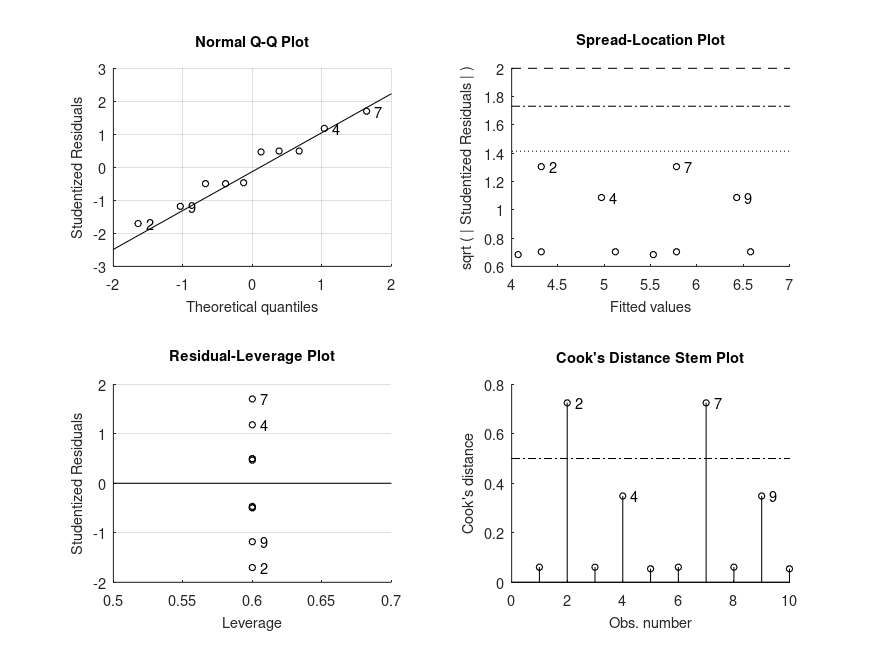 |
Demonstration 3
The following code
% One-way design. The data is from a study on the strength of structural
% beams, in Hogg and Ledolter (1987) Engineering Statistics. NY: MacMillan
strength = [82 86 79 83 84 85 86 87 74 82 ...
78 75 76 77 79 79 77 78 82 79]';
alloy = {'st','st','st','st','st','st','st','st', ...
'al1','al1','al1','al1','al1','al1', ...
'al2','al2','al2','al2','al2','al2'}';
% One-way ANOVA statistics
[STATS, BOOTSTAT, AOVSTAT] = bootlm (strength, alloy, 'display', 'off',
'varnames', 'alloy');
fprintf ('ONE-WAY ANOVA SUMMARY\n')
fprintf ('F(%u,%u) = %.2f, p = %.3g for the model: %s\n', ...
AOVSTAT.DF, AOVSTAT.DFE, AOVSTAT.F, ...
AOVSTAT.PVAL, AOVSTAT.MODEL{1});
% 95% confidence intervals and p-values for the differences in mean strength
% of the three alloys (computed by wild bootstrap)
STATS = bootlm (strength, alloy, 'display', 'on', 'varnames', 'alloy',
'dim', 1, 'posthoc','pairwise', ...
'alpha', [.025, .975]);
% 95% credible intervals for the estimated marginal means of the strengths
% of each of the alloys (computed by Bayesian bootstrap)
STATS = bootlm (strength, alloy, 'display', 'on', 'varnames', 'alloy', ...
'dim', 1, 'method','bayesian', 'prior', 'auto');
Produces the following output
ONE-WAY ANOVA SUMMARY F(2,17) = 15.40, p = 0.0001 for the model: strength ~ 1 + alloy MODEL FORMULA (based on Wilkinson's notation): strength ~ 1 + alloy MODEL POSTHOC COMPARISONS name mean CI_lower CI_upper p-adj -------------------------------------------------------------------------------- st - al1 +7.000 +3.912 +10.14 <.001 st - al2 +5.000 +2.511 +7.429 .001 al1 - al2 -2.000 -4.870 +0.8620 .168 MODEL FORMULA (based on Wilkinson's notation): strength ~ 1 + alloy MODEL ESTIMATED MARGINAL MEANS name mean CI_lower CI_upper N -------------------------------------------------------------------------------- st +84.00 +82.12 +85.68 8 al1 +77.00 +74.95 +79.46 6 al2 +79.00 +77.73 +80.45 6
and the following figure
| Figure 1 |
|---|
| 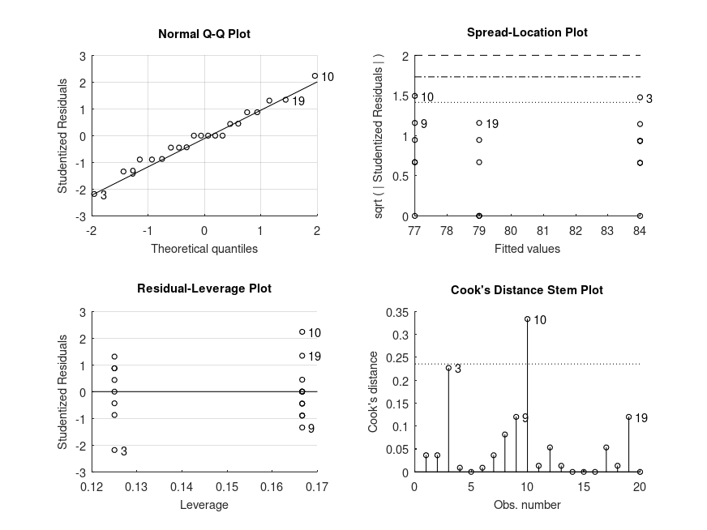 |
Demonstration 4
The following code
% One-way repeated measures design. The data is from a study on the number
% of words recalled by 10 subjects for three time condtions, in Loftus &
% Masson (1994) Psychon Bull Rev. 1(4):476-490, Table 2.
words = [10 13 13; 6 8 8; 11 14 14; 22 23 25; 16 18 20; ...
15 17 17; 1 1 4; 12 15 17; 9 12 12; 8 9 12];
seconds = [1 2 5; 1 2 5; 1 2 5; 1 2 5; 1 2 5; ...
1 2 5; 1 2 5; 1 2 5; 1 2 5; 1 2 5;];
subject = [ 1 1 1; 2 2 2; 3 3 3; 4 4 4; 5 5 5; ...
6 6 6; 7 7 7; 8 8 8; 9 9 9; 10 10 10];
% One-way repeated measures ANOVA statistics
[STATS, BOOTSTAT, AOVSTAT] = bootlm (words(:), {subject(:), seconds(:)}, ...
'model', 'linear', 'display', 'off', ...
'varnames', {'subject', 'seconds'});
fprintf ('ONE-WAY REPEATED MEASURES ANOVA SUMMARY\n')
fprintf ('F(%u,%u) = %.2f, p = %.3g for the model: %s\n', ...
AOVSTAT.DF(2), AOVSTAT.DFE, AOVSTAT.F(2), ...
AOVSTAT.PVAL(2), AOVSTAT.MODEL{2});
% 95% confidence intervals and p-values for the differences in mean number
% of words recalled for the different times (using wild bootstrap).
STATS = bootlm (words(:), {subject(:), seconds(:)}, ...
'model', 'linear', 'display', 'on', ...
'varnames', {'subject', 'seconds'}, ...
'dim', 2, 'posthoc', 'pairwise', ...
'alpha', [.025, .975]);
% 95% credible intervals for the estimated marginal means of the number of
% words recalled for each time (computed using Bayesian bootstrap).
STATS = bootlm (words(:), {subject(:), seconds(:)}, ...
'model', 'linear', 'display', 'on', ...
'varnames', {'subject', 'seconds'}, ...
'dim', 2, 'method', 'bayesian', 'prior', 'auto');
Produces the following output
ONE-WAY REPEATED MEASURES ANOVA SUMMARY F(2,18) = 42.51, p = 0.0001 for the model: Y ~ 1 + subject + seconds MODEL FORMULA (based on Wilkinson's notation): Y ~ 1 + subject + seconds MODEL POSTHOC COMPARISONS name mean CI_lower CI_upper p-adj -------------------------------------------------------------------------------- 1 - 2 -2.000 -2.741 -1.263 <.001 1 - 5 -3.200 -3.844 -2.539 <.001 2 - 5 -1.200 -2.074 -0.3211 .015 MODEL FORMULA (based on Wilkinson's notation): Y ~ 1 + subject + seconds MODEL ESTIMATED MARGINAL MEANS name mean CI_lower CI_upper N -------------------------------------------------------------------------------- 1 +11.00 +10.65 +11.36 10 2 +13.00 +12.52 +13.49 10 5 +14.20 +13.77 +14.66 10
and the following figure
| Figure 1 |
|---|
| 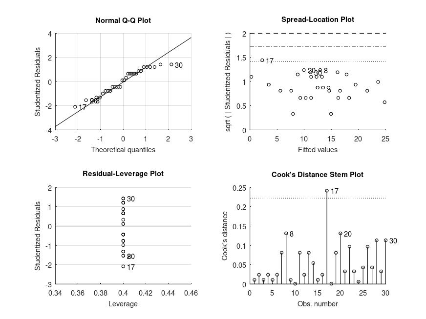 |
Demonstration 5
The following code
% Balanced two-way design. The data is yield of cups of popped popcorn from
% different popcorn brands and popper types, in Hogg and Ledolter (1987)
% Engineering Statistics. NY: MacMillan
popcorn = [5.5, 4.5, 3.5; 5.5, 4.5, 4.0; 6.0, 4.0, 3.0; ...
6.5, 5.0, 4.0; 7.0, 5.5, 5.0; 7.0, 5.0, 4.5];
brands = {'Gourmet', 'National', 'Generic'; ...
'Gourmet', 'National', 'Generic'; ...
'Gourmet', 'National', 'Generic'; ...
'Gourmet', 'National', 'Generic'; ...
'Gourmet', 'National', 'Generic'; ...
'Gourmet', 'National', 'Generic'};
popper = {'oil', 'oil', 'oil'; 'oil', 'oil', 'oil'; 'oil', 'oil', 'oil'; ...
'air', 'air', 'air'; 'air', 'air', 'air'; 'air', 'air', 'air'};
% Check regression coefficients corresponding to brand x popper interaction
STATS = bootlm (popcorn(:), {brands(:), popper(:)}, ...
'display', 'on', 'model', 'full', ...
'varnames', {'brands', 'popper'});
% 95% confidence intervals and p-values for the differences in mean yield of
% different popcorn brands (computed by wild bootstrap).
STATS = bootlm (popcorn(:), {brands(:), popper(:)}, ...
'display', 'on', 'model', 'full', ...
'varnames', {'brands', 'popper'}, ...
'dim', 1, 'posthoc', 'pairwise');
% 95% credible intervals for the estimated marginal means of the yield for
% each popcorn brand (computed by Bayesian bootstrap).
STATS = bootlm (popcorn(:), {brands(:), popper(:)}, ...
'display', 'on', 'model', 'full', ...
'varnames', {'brands', 'popper'}, ...
'dim', 1, 'method', 'bayesian', 'prior', 'auto');
% 95% confidence intervals and p-values for the differences in mean yield
% for different popper types (computed by wild bootstrap).
STATS = bootlm (popcorn(:), {brands(:), popper(:)}, ...
'display', 'on', 'model', 'full', ...
'varnames', {'brands', 'popper'}, ...
'dim', 2, 'posthoc', 'pairwise');
% 95% credible intervals for the estimated marginal means of the yield for
% each popper type (computed by Bayesian bootstrap).
STATS = bootlm (popcorn(:), {brands(:), popper(:)}, ...
'display', 'on', 'model', 'full', ...
'varnames', {'brands', 'popper'}, ...
'dim', 2, 'method', 'bayesian', 'prior', 'auto');
Produces the following output
MODEL FORMULA (based on Wilkinson's notation): Y ~ 1 + brands + popper + brands:popper MODEL COEFFICIENTS name coeff CI_lower CI_upper p-val -------------------------------------------------------------------------------- (Intercept) +5.667 +4.788 +6.545 <.001 brands_1 -1.333 -1.904 -0.7627 .013 brands_2 -2.167 -3.124 -1.210 <.001 popper_1 +1.167 +0.5966 +1.737 .018 brands:popper_1 -0.3333 -1.077 +0.4108 .335 brands:popper_2 -0.1667 -1.270 +0.9365 .731 MODEL FORMULA (based on Wilkinson's notation): Y ~ 1 + brands + popper + brands:popper MODEL POSTHOC COMPARISONS name mean CI_lower CI_upper p-adj -------------------------------------------------------------------------------- Gourmet - National +1.500 +1.127 +1.873 <.001 Gourmet - Generic +2.250 +1.710 +2.790 <.001 National - Generic +0.7500 +0.1986 +1.301 .011 MODEL FORMULA (based on Wilkinson's notation): Y ~ 1 + brands + popper + brands:popper MODEL ESTIMATED MARGINAL MEANS name mean CI_lower CI_upper N -------------------------------------------------------------------------------- Gourmet +6.250 +6.061 +6.438 6 National +4.750 +4.554 +4.937 6 Generic +4.000 +3.688 +4.332 6 MODEL FORMULA (based on Wilkinson's notation): Y ~ 1 + brands + popper + brands:popper MODEL POSTHOC COMPARISONS name mean CI_lower CI_upper p-adj -------------------------------------------------------------------------------- oil - air -1.000 -1.388 -0.6119 <.001 MODEL FORMULA (based on Wilkinson's notation): Y ~ 1 + brands + popper + brands:popper MODEL ESTIMATED MARGINAL MEANS name mean CI_lower CI_upper N -------------------------------------------------------------------------------- oil +4.500 +4.317 +4.685 9 air +5.500 +5.315 +5.684 9
and the following figure
| Figure 1 |
|---|
 |
Demonstration 6
The following code
% Balanced two-way design (2x2). The data represents a study on the
% effects of gender and alcohol alcohol consumption on attractiveness,
% in Field (2004).
% Perform factorial two-way ANOVA
gender = {'f' 'f' 'f' 'f' 'f' 'f' 'f' 'f' 'm' 'm' 'm' 'm' 'm' 'm' 'm' 'm' ...
'f' 'f' 'f' 'f' 'f' 'f' 'f' 'f' 'm' 'm' 'm' 'm' 'm' 'm' 'm' 'm' ...
'f' 'f' 'f' 'f' 'f' 'f' 'f' 'f' 'm' 'm' 'm' 'm' 'm' 'm' 'm' 'm'}';
pints = [0 0 0 0 0 0 0 0 0 0 0 0 0 0 0 0 2 2 2 2 2 2 2 2 2 2 2 2 2 2 2 2 ...
4 4 4 4 4 4 4 4 4 4 4 4 4 4 4 4]';
score = [65 70 60 60 60 55 60 55 50 55 80 65 70 75 75 65 70 65 60 70 65 ...
60 60 50 45 60 85 65 70 70 80 60 55 65 70 55 55 60 50 50 30 30 ...
30 55 35 20 45 40]';
[STATS, BOOTSTAT, AOVSTAT] = bootlm (score, {gender, pints}, 'model', ...
'full', 'display', 'off', 'varnames', ...
{'gender', 'score'}, 'seed', 1);
fprintf ('ANOVA SUMMARY\n')
for i = 1:numel(AOVSTAT.F)
fprintf ('F(%u,%u) = %.2f, p = %.3g for the model: %s\n', ...
AOVSTAT.DF(i), AOVSTAT.DFE, AOVSTAT.F(i), ...
AOVSTAT.PVAL(i), AOVSTAT.MODEL{i});
end
% There is a significant interaction so we shall get estimated marginal means
% for all combinations of levels of both predictors
STATS = bootlm (score, {gender, pints}, 'model', 'full', 'display', 'on', ...
'varnames', {'gender', 'score'}, 'seed', 1, ...
'dim', [1, 2], 'method', 'bayesian','prior', 'auto');
% Perform posthoc tests comparing the effect of gender on the attractiveness
% score for each amount of alcohol consumed
STATS = bootlm (score, {gender, pints}, 'model', 'full', 'display', 'on', ...
'varnames', {'gender', 'score'}, 'seed', 1, ...
'dim', [1, 2], 'posthoc', [1 2; 3 4; 5 6], ...
'alpha', [0.025, 0.975]);
% Perform posthoc tests comparing the effect of drinking different amounts of
% on the attractiveness score at each levels of gender
STATS = bootlm (score, {gender, pints}, 'model', 'full', 'display', 'on', ...
'varnames', {'gender', 'score'}, 'seed', 1, ...
'dim', [1, 2], 'posthoc', [1 3; 3 5; 1 5; 2 4; 4 6; 2 6], ...
'alpha', [0.025, 0.975]);
Produces the following output
ANOVA SUMMARY F(1,42) = 2.03, p = 0.162 for the model: score ~ 1 + gender F(2,42) = 20.07, p = 0.0001 for the model: score ~ 1 + gender + score F(2,42) = 11.91, p = 0.0001 for the model: score ~ 1 + gender + score + gender:score MODEL FORMULA (based on Wilkinson's notation): score ~ 1 + gender + score + gender:score MODEL ESTIMATED MARGINAL MEANS name mean CI_lower CI_upper N -------------------------------------------------------------------------------- f, 0 +60.62 +57.41 +64.31 8 m, 0 +66.87 +59.70 +73.74 8 f, 2 +62.50 +57.82 +66.98 8 m, 2 +66.87 +57.88 +75.75 8 f, 4 +57.50 +53.03 +62.83 8 m, 4 +35.62 +28.28 +43.40 8 MODEL FORMULA (based on Wilkinson's notation): score ~ 1 + gender + score + gender:score MODEL POSTHOC COMPARISONS name mean CI_lower CI_upper p-adj -------------------------------------------------------------------------------- f, 0 - m, 0 -6.250 -15.29 +2.670 .291 f, 2 - m, 2 -4.375 -15.22 +6.147 .398 f, 4 - m, 4 +21.88 +12.20 +31.81 <.001 MODEL FORMULA (based on Wilkinson's notation): score ~ 1 + gender + score + gender:score MODEL POSTHOC COMPARISONS name mean CI_lower CI_upper p-adj -------------------------------------------------------------------------------- f, 0 - f, 2 -1.875 -8.048 +4.133 1.000 f, 2 - f, 4 +5.000 -2.170 +12.04 .638 f, 0 - f, 4 +3.125 -3.402 +9.507 .966 m, 0 - m, 2 -3.553e-15 -12.03 +11.70 1.000 m, 2 - m, 4 +31.25 +19.02 +43.41 <.001 m, 0 - m, 4 +31.25 +20.03 +41.98 <.001
and the following figure
| Figure 1 |
|---|
| 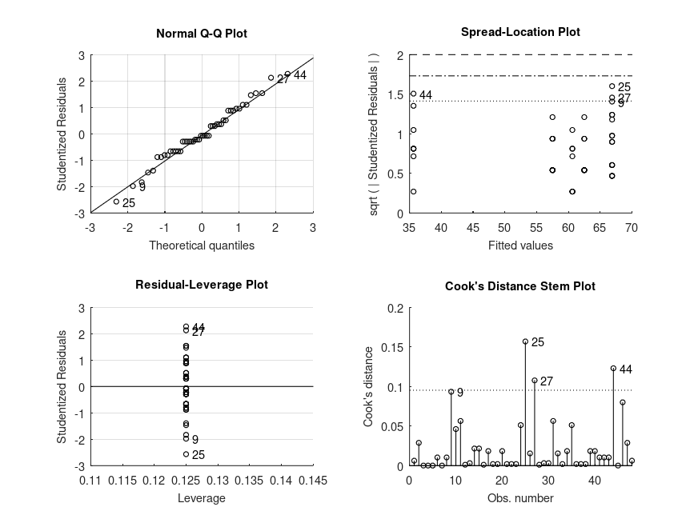 |
Demonstration 7
The following code
% Unbalanced two-way design (2x2). The data is from a study on the effects
% of gender and a college degree on starting salaries of a sample of company
% employees, in Maxwell, Delaney and Kelly (2018): Chapter 7, Table 15. The
% starting salaries are in units of 1000 dollars per annum.
salary = [24 26 25 24 27 24 27 23 15 17 20 16, ...
25 29 27 19 18 21 20 21 22 19]';
gender = {'f' 'f' 'f' 'f' 'f' 'f' 'f' 'f' 'f' 'f' 'f' 'f'...
'm' 'm' 'm' 'm' 'm' 'm' 'm' 'm' 'm' 'm'}';
degree = [true true true true true true true true false false false false ...
true true true false false false false false false false]';
% ANOVA (including the main effect of gender averaged over all levels of
% degree). In this order, the variability in salary only attributed to
% having a degree is tested first. Then, having accounted for any effect of
% degree, we test for whether variability in salary attributed to gender is
% significant. Finally, the interaction term tests whether the effect of
% gender differs depending on whether the subjects have a degree or not.
[STATS, BOOTSTAT, AOVSTAT] = bootlm (salary, {degree, gender}, 'model', ...
'full', 'display', 'off', 'varnames', ...
{'degree', 'gender'}, 'seed', 1);
fprintf ('ANOVA SUMMARY with gender averaged over levels of degree\n')
for i = 1:numel(AOVSTAT.F)
fprintf ('F(%u,%u) = %.2f, p = %.3g for the model: %s\n', ...
AOVSTAT.DF(i), AOVSTAT.DFE, AOVSTAT.F(i), ...
AOVSTAT.PVAL(i), AOVSTAT.MODEL{i});
end
% Since the interaction is not significant (F(1,18) = 0.42, p = 0.567), we
% draw our attention to the main effects. We see that employees in this
% have significantly different starting salaries depending or not on whether
% they have a degree (F(1,18) = 87.20, p < 0.001). We can also see that once
% we factor in any differences in salary attributed to having a degree,
% there is a significant difference in the salaries of men and women at
% this company (F(1,18) = 10.97, p = 0.005).
% ANOVA (including the main effect of degree averaged over all levels of
% gender). In this order, the variability in salary only attributed to being
% male or female is tested first. Then, having accounted for any effect of
% gender, we test for whether variability in salary attributed to having a
% degree is significant. Finally, the interaction term tests whether the
% effect of having a degree or not differs depending on whether the subjects
% are male or female. (Note that the result for the interaction is not
% affected by the order of the predictors).
[STATS, BOOTSTAT, AOVSTAT] = bootlm (salary, {gender, degree}, 'model', ...
'full', 'display', 'off', 'varnames', ...
{'gender', 'degree'}, 'seed', 1);
fprintf ('\nANOVA SUMMARY with degree averaged over levels of gender\n')
for i = 1:numel(AOVSTAT.F)
fprintf ('F(%u,%u) = %.2f, p = %.3g for the model: %s\n', ...
AOVSTAT.DF(i), AOVSTAT.DFE, AOVSTAT.F(i), ...
AOVSTAT.PVAL(i), AOVSTAT.MODEL{i});
end
% We can now see in the output that there is no significant difference in
% salary between men and women in this company! (F(1,18) = 0.11, p = 0.752).
% Why the discrepancy? There still seems to be a significant effect of
% having a degree on the salary of people in this company (F(1,18) = 98.06,
% p < 0.001). Lets look at the regression coefficients to see what this
% effect of degree is.
STATS = bootlm (salary, {gender, degree}, 'model', 'full', ...
'display', 'on', 'varnames', ...
{'gender', 'degree'}, 'method', 'bayesian', ...
'contrasts', 'treatment');
STATS.levels
% The order of the factor levels for degree indicates that having a degree
% (i.e. a code of 1) is listed first and therefore is the reference level
% for our treatment contrast coding. We see then from the second regression
% coefficient that starting salaries in this company are $8K lower for
% employees without a college degree. Let's now take a look at the estimated
% marginal means.
STATS = bootlm (salary, {gender, degree}, 'model', 'full', ...
'display', 'on', 'varnames', ...
{'gender', 'degree'}, 'dim', [1, 2], ...
'method', 'bayesian','prior', 'auto');
% Ah ha! So it seems that sample sizes are very unbalanced here, with most
% of the women in this sample having a degree, while most of the men not.
% Since the regression coefficient indicated that a high starting salary is
% an outcome of having a degree, this observation likely explains why
% salaries where not significantly different between men and women when we
% ran the ANOVA with gender listed first in the model (i.e. not accounting
% for whether employees had a college degree). Note that our inferences here
% assume that the unbalanced samples sizes are representative of similar
% imbalance in the company as a whole (i.e. the population).
% Since the interaction term (F(1,18) = 0.42) was not significant (p > 0.1),
% we might rather consider the hypotheses tested using type II sums-of-
% squares without the interaction, which do not depend on the order and have
% more power respectively. This is easy to achieve with only 2 predictors,
% by repeating the 'bootlm' commands with different predictors added last to
% the model (as above) but without any interaction (i.e. setting 'model',
% 'linear'). We then take the statistics for the last main effect listed
% in each of the ANOVA tables - these then correspond to the ANOVA test for
% the respective predictor with type II sums-of-squares. For example:
[~, ~, AOVSTAT1] = bootlm (salary, {degree, gender}, 'model', ...
'linear', 'display', 'off', 'varnames', ...
{'degree', 'gender'}, 'seed', 1);
fprintf ('\nANOVA SUMMARY (with type II sums-of-squares for main effects)\n')
fprintf ('F(%u,%u) = %.2f, p = %.3g for the model: %s (gender)\n', ...
AOVSTAT1.DF(2), AOVSTAT1.DFE, AOVSTAT1.F(2), ...
AOVSTAT1.PVAL(2), AOVSTAT1.MODEL{2});
[~, ~, AOVSTAT2] = bootlm (salary, {gender, degree}, 'model', ...
'linear', 'display', 'off', 'varnames', ...
{'gender', 'degree'}, 'seed', 1);
fprintf ('F(%u,%u) = %.2f, p = %.3g for the model: %s (degree)\n', ...
AOVSTAT2.DF(2), AOVSTAT2.DFE, AOVSTAT2.F(2), ...
AOVSTAT2.PVAL(2), AOVSTAT2.MODEL{2});
% Here is the output from 'anovan' for comparison:
% ANOVA TABLE (Type II sums-of-squares):
%
% Source Sum Sq. d.f. Mean Sq. R Sq. F Prob>F
% --------------------------------------------------------------------------
% gender 30.462 1 30.462 0.373 11.31 .003
% degree 272.39 1 272.39 0.842 101.13 <.001
% Error 51.175 19 2.6934
% Total 323.86 21
Produces the following output
ANOVA SUMMARY with gender averaged over levels of degree
F(1,18) = 87.20, p = 0.0001 for the model: salary ~ 1 + degree
F(1,18) = 10.97, p = 0.00495 for the model: salary ~ 1 + degree + gender
F(1,18) = 0.42, p = 0.567 for the model: salary ~ 1 + degree + gender + degree:gender
ANOVA SUMMARY with degree averaged over levels of gender
F(1,18) = 0.11, p = 0.752 for the model: salary ~ 1 + gender
F(1,18) = 98.06, p = 0.0001 for the model: salary ~ 1 + gender + degree
F(1,18) = 0.42, p = 0.567 for the model: salary ~ 1 + gender + degree + gender:degree
MODEL FORMULA (based on Wilkinson's notation):
salary ~ 1 + gender + degree + gender:degree
MODEL COEFFICIENTS
name coeff CI_lower CI_upper p-val
--------------------------------------------------------------------------------
(Intercept) +25.00 +24.11 +25.92
gender_1 +2.000 +0.2268 +3.812
degree_1 -8.000 -9.803 -6.046
gender:degree_1 +1.000 -1.649 +3.549
ans =
{
[1,1] =
{
[1,1] = f
[2,1] = m
}
[2,1] =
{
[1,1] = 1
[2,1] = 0
}
}
MODEL FORMULA (based on Wilkinson's notation):
salary ~ 1 + gender + degree + gender:degree
MODEL ESTIMATED MARGINAL MEANS
name mean CI_lower CI_upper N
--------------------------------------------------------------------------------
f, 1 +25.00 +24.03 +26.07 8
m, 1 +27.00 +25.11 +29.00 3
f, 0 +17.00 +15.20 +19.22 4
m, 0 +20.00 +19.02 +21.03 7
ANOVA SUMMARY (with type II sums-of-squares for main effects)
F(1,19) = 11.31, p = 0.00481 for the model: salary ~ 1 + degree + gender (gender)
F(1,19) = 101.13, p = 0.0001 for the model: salary ~ 1 + gender + degree (degree)
and the following figure
| Figure 1 |
|---|
| 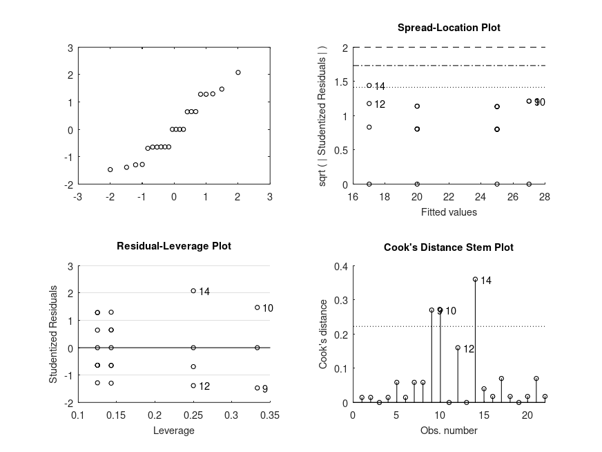 |
Demonstration 8
The following code
% Simple linear regression. The data represents salaries of employees and
% their years of experience, modified from Allena Venkata. The salaries are
% in units of 1000 dollars per annum.
years = [1.20 1.40 1.60 2.10 2.30 3.00 3.10 3.30 3.30 3.80 4.00 4.10 ...
4.10 4.20 4.60 5.00 5.20 5.40 6.00 6.10 6.90 7.20 8.00 8.30 ...
8.80 9.10 9.60 9.70 10.40 10.60]';
salary = [39 46 38 44 40 57 60 54 64 57 63 56 57 57 61 68 66 83 81 94 92 ...
98 101 114 109 106 117 113 122 122]';
STATS = bootlm (salary, years, 'model', 'linear', 'continuous', 1, ...
'display', 'on', 'varnames', 'years');
% We can see from the intercept that the starting starting salary is $24.8 K
% and that salary increase per year of experience is $9.5 K.
Produces the following output
MODEL FORMULA (based on Wilkinson's notation): salary ~ 1 + years MODEL COEFFICIENTS name coeff CI_lower CI_upper p-val -------------------------------------------------------------------------------- (Intercept) +24.78 +20.44 +29.13 <.001 years +9.455 +8.843 +10.07 <.001
and the following figure
| Figure 1 |
|---|
| 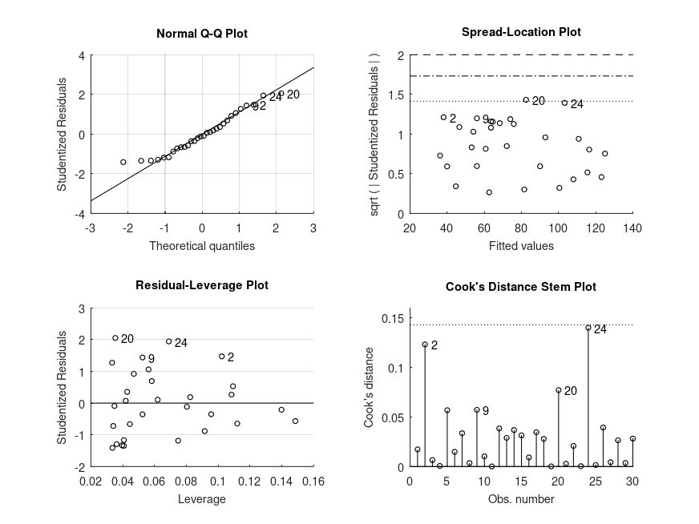 |
Demonstration 9
The following code
% One-way design with continuous covariate. The data is from a study of the
% additive effects of species and temperature on chirpy pulses of crickets,
% from Stitch, The Worst Stats Text eveR
pulse = [67.9 65.1 77.3 78.7 79.4 80.4 85.8 86.6 87.5 89.1 ...
98.6 100.8 99.3 101.7 44.3 47.2 47.6 49.6 50.3 51.8 ...
60 58.5 58.9 60.7 69.8 70.9 76.2 76.1 77 77.7 84.7]';
temp = [20.8 20.8 24 24 24 24 26.2 26.2 26.2 26.2 28.4 ...
29 30.4 30.4 17.2 18.3 18.3 18.3 18.9 18.9 20.4 ...
21 21 22.1 23.5 24.2 25.9 26.5 26.5 26.5 28.6]';
species = {'ex' 'ex' 'ex' 'ex' 'ex' 'ex' 'ex' 'ex' 'ex' 'ex' 'ex' ...
'ex' 'ex' 'ex' 'niv' 'niv' 'niv' 'niv' 'niv' 'niv' 'niv' ...
'niv' 'niv' 'niv' 'niv' 'niv' 'niv' 'niv' 'niv' 'niv' 'niv'};
% Perform ANCOVA (type I sums-of-squares)
% Use 'anova' contrasts so that the continuous covariate is centered
[STATS, BOOTSTAT, AOVSTAT] = bootlm (pulse, {temp, species}, 'model', ...
'linear', 'continuous', 1, 'display', 'off', ...
'varnames', {'temp', 'species'}, ...
'contrasts', 'anova', 'seed', 1);
fprintf ('\nANCOVA SUMMARY (with type I sums-of-squares)\n')
for i = 1:numel(AOVSTAT.F)
fprintf ('F(%u,%u) = %.2f, p = %.3g for the model: %s\n', ...
AOVSTAT.DF(i), AOVSTAT.DFE, AOVSTAT.F(i), ...
AOVSTAT.PVAL(i), AOVSTAT.MODEL{i});
end
% Perform ANCOVA (type II sums-of-squares)
% Use 'anova' contrasts so that the continuous covariate is centered
[~, ~, AOVSTAT1] = bootlm (pulse, {temp, species}, 'model', ...
'linear', 'continuous', 1, 'display', 'off', ...
'varnames', {'temp', 'species'}, ...
'contrasts', 'anova', 'seed', 1);
fprintf ('\nANOVA SUMMARY (with type II sums-of-squares)\n')
fprintf ('F(%u,%u) = %.2f, p = %.3g for the model: %s (species)\n', ...
AOVSTAT1.DF(2), AOVSTAT1.DFE, AOVSTAT1.F(2), ...
AOVSTAT1.PVAL(2), AOVSTAT1.MODEL{2});
[~, ~, AOVSTAT2] = bootlm (pulse, {species, temp}, 'model', ...
'linear', 'continuous', 2, 'display', 'off', ...
'varnames', {'species', 'temp'}, ...
'contrasts', 'anova', 'seed', 1);
fprintf ('F(%u,%u) = %.2f, p = %.3g for the model: %s (temp)\n', ...
AOVSTAT2.DF(2), AOVSTAT2.DFE, AOVSTAT2.F(2), ...
AOVSTAT2.PVAL(2), AOVSTAT2.MODEL{2});
% Estimate regression coefficients using 'anova' contrast coding
STATS = bootlm (pulse, {temp, species}, 'model', 'linear', ...
'continuous', 1, 'display', 'on', ...
'varnames', {'temp', 'species'}, ...
'contrasts', 'anova');
% 95% confidence intervals and p-values for the differences in the mean of
% chirpy pulses of ex ad niv species (computed by wild bootstrap).
STATS = bootlm (pulse, {temp, species}, 'model', 'linear', ...
'continuous', 1, 'display', 'on', ...
'varnames', {'temp', 'species'}, 'dim', 2, ...
'posthoc', 'trt_vs_ctrl', 'contrasts', 'anova');
% 95% credible intervals for the estimated marginal means of chirpy pulses
% of ex and niv species (computed by Bayesian bootstrap).
STATS = bootlm (pulse, {temp, species}, 'model', 'linear', ...
'continuous', 1, 'display', 'on', ...
'varnames', {'temp', 'species'}, 'dim', 2, ...
'method', 'bayesian', 'prior', 'auto', ...
'contrasts', 'anova');
Produces the following output
ANCOVA SUMMARY (with type I sums-of-squares) F(1,28) = 2474.04, p = 0.0001 for the model: pulse ~ 1 + temp F(1,28) = 187.40, p = 0.0001 for the model: pulse ~ 1 + temp + species ANOVA SUMMARY (with type II sums-of-squares) F(1,28) = 187.40, p = 0.0001 for the model: pulse ~ 1 + temp + species (species) F(1,28) = 1371.35, p = 0.0001 for the model: pulse ~ 1 + species + temp (temp) MODEL FORMULA (based on Wilkinson's notation): pulse ~ 1 + temp + species MODEL COEFFICIENTS name coeff CI_lower CI_upper p-val -------------------------------------------------------------------------------- (Intercept) +73.37 +72.70 +74.05 <.001 temp +3.603 +3.407 +3.799 <.001 species_1 -10.07 -11.41 -8.725 <.001 MODEL FORMULA (based on Wilkinson's notation): pulse ~ 1 + temp + species MODEL POSTHOC COMPARISONS name mean CI_lower CI_upper p-adj -------------------------------------------------------------------------------- niv - ex -10.07 -11.41 -8.716 <.001 MODEL FORMULA (based on Wilkinson's notation): pulse ~ 1 + temp + species MODEL ESTIMATED MARGINAL MEANS name mean CI_lower CI_upper N -------------------------------------------------------------------------------- ex +78.41 +77.43 +79.39 14 niv +68.34 +67.61 +69.17 17
and the following figure
| Figure 1 |
|---|
| 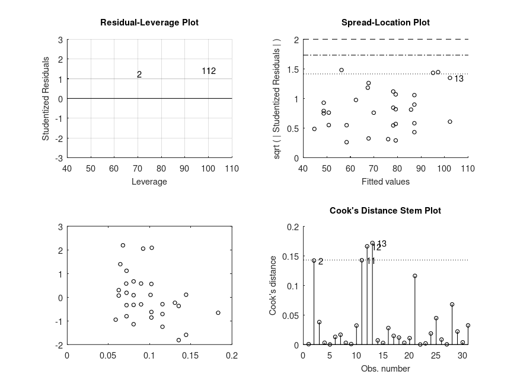 |
Demonstration 10
The following code
% Unbalanced three-way design (3x2x2). The data is from a study of the
% effects of three different drugs, biofeedback and diet on patient blood
% pressure, adapted* from Maxwell, Delaney and Kelly (2018): Ch 8, Table 12
drug = {'X' 'X' 'X' 'X' 'X' 'X' 'X' 'X' 'X' 'X' 'X' 'X' ...
'X' 'X' 'X' 'X' 'X' 'X' 'X' 'X' 'X' 'X' 'X' 'X';
'Y' 'Y' 'Y' 'Y' 'Y' 'Y' 'Y' 'Y' 'Y' 'Y' 'Y' 'Y' ...
'Y' 'Y' 'Y' 'Y' 'Y' 'Y' 'Y' 'Y' 'Y' 'Y' 'Y' 'Y';
'Z' 'Z' 'Z' 'Z' 'Z' 'Z' 'Z' 'Z' 'Z' 'Z' 'Z' 'Z' ...
'Z' 'Z' 'Z' 'Z' 'Z' 'Z' 'Z' 'Z' 'Z' 'Z' 'Z' 'Z'};
feedback = [1 1 1 1 1 1 1 1 1 1 1 1 0 0 0 0 0 0 0 0 0 0 0 0;
1 1 1 1 1 1 1 1 1 1 1 1 0 0 0 0 0 0 0 0 0 0 0 0;
1 1 1 1 1 1 1 1 1 1 1 1 0 0 0 0 0 0 0 0 0 0 0 0];
diet = [0 0 0 0 0 0 1 1 1 1 1 1 0 0 0 0 0 0 1 1 1 1 1 1;
0 0 0 0 0 0 1 1 1 1 1 1 0 0 0 0 0 0 1 1 1 1 1 1;
0 0 0 0 0 0 1 1 1 1 1 1 0 0 0 0 0 0 1 1 1 1 1 1];
BP = [170 175 165 180 160 158 161 173 157 152 181 190 ...
173 194 197 190 176 198 164 190 169 164 176 175;
186 194 201 215 219 209 164 166 159 182 187 174 ...
189 194 217 206 199 195 171 173 196 199 180 203;
180 187 199 170 204 194 162 184 183 156 180 173 ...
202 228 190 206 224 204 205 199 170 160 179 179];
% Perform 3-way ANOVA (this design is balanced, thus the order of predictors
% does not make any difference)
[STATS, BOOTSTAT, AOVSTAT] = bootlm (BP(:), {diet(:), drug(:), ...
feedback(:)}, 'seed', 1, ...
'model', 'full', 'display', 'off', ...
'varnames', {'diet', 'drug', 'feedback'});
fprintf ('ANOVA SUMMARY\n')
for i = 1:numel(AOVSTAT.F)
fprintf ('F(%u,%u) = %.2f, p = %.3g for the model: %s\n', ...
AOVSTAT.DF(i), AOVSTAT.DFE, AOVSTAT.F(i), ...
AOVSTAT.PVAL(i), AOVSTAT.MODEL{i});
end
% Check regression coefficient corresponding to drug x feedback x diet
STATS = bootlm (BP(:), {diet(:), drug(:), feedback(:)}, ...
'model', 'full', ...
'display', 'on', ...
'varnames', {'diet', 'drug', 'feedback'});
% 95% confidence intervals and p-values for the differences in mean salary
% between males and females (computed by wild bootstrap).
STATS = bootlm (BP(:), {diet(:), drug(:), feedback(:)}, 'model', 'full', ...
'display', 'on', 'dim', [1,2,3], ...
'posthoc', 'trt_vs_ctrl', ...
'varnames', {'diet', 'drug', 'feedback'});
% 95% credible intervals for the estimated marginal means of salaries of
% females and males (computed by Bayesian bootstrap).
STATS = bootlm (BP(:), {diet(:), drug(:), feedback(:)}, 'model', 'full', ...
'display', 'on', 'dim', [1,2,3], ...
'method', 'bayesian', 'prior', 'auto', ...
'varnames', {'diet', 'drug', 'feedback'});
Produces the following output
ANOVA SUMMARY F(1,60) = 33.20, p = 0.0001 for the model: Y ~ 1 + diet F(2,60) = 11.73, p = 0.000179 for the model: Y ~ 1 + diet + drug F(1,60) = 13.07, p = 0.000561 for the model: Y ~ 1 + diet + drug + feedback F(2,60) = 2.88, p = 0.0628 for the model: Y ~ 1 + diet + drug + feedback + diet:drug F(1,60) = 0.20, p = 0.648 for the model: Y ~ 1 + diet + drug + feedback + diet:drug + diet:feedback F(2,60) = 0.83, p = 0.434 for the model: Y ~ 1 + diet + drug + feedback + diet:drug + diet:feedback + drug:feedback F(2,60) = 3.43, p = 0.0388 for the model: Y ~ 1 + diet + drug + feedback + diet:drug + diet:feedback + drug:feedback + diet:drug:feedback MODEL FORMULA (based on Wilkinson's notation): Y ~ 1 + diet + drug + feedback + diet:drug + diet:feedback + drug:feedback + diet:drug:feedback MODEL COEFFICIENTS name coeff CI_lower CI_upper p-val -------------------------------------------------------------------------------- (Intercept) +168.0 +157.9 +178.1 <.001 diet_1 +1.000 -15.70 +17.70 .883 drug_1 +36.00 +21.99 +50.01 <.001 drug_2 +21.00 +6.751 +35.25 .008 feedback_1 +20.00 +7.057 +32.94 .006 diet:drug_1 -33.00 -53.28 -12.72 .004 diet:drug_2 -17.00 -37.94 +3.936 .104 diet:feedback_1 -16.00 -35.17 +3.172 .095 drug:feedback_1 -24.00 -42.08 -5.922 .011 drug:feedback_2 -7.061e-14 -19.93 +19.93 1.000 diet:drug:feedback_1 +35.00 +7.926 +62.07 .013 diet:drug:feedback_2 +5.000 -24.39 +34.39 .737 MODEL FORMULA (based on Wilkinson's notation): Y ~ 1 + diet + drug + feedback + diet:drug + diet:feedback + drug:feedback + diet:drug:feedback MODEL POSTHOC COMPARISONS name mean CI_lower CI_upper p-adj -------------------------------------------------------------------------------- 1, X, 1 - 0, X, 1 +1.000 -15.45 +17.45 1.000 0, Y, 1 - 0, X, 1 +36.00 +21.52 +50.48 .002 1, Y, 1 - 0, X, 1 +4.000 -8.896 +16.90 1.000 0, Z, 1 - 0, X, 1 +21.00 +6.775 +35.22 .057 1, Z, 1 - 0, X, 1 +5.000 -8.547 +18.55 1.000 0, X, 0 - 0, X, 1 +20.00 +7.164 +32.84 .057 1, X, 0 - 0, X, 1 +5.000 -6.615 +16.62 1.000 0, Y, 0 - 0, X, 1 +32.00 +20.00 +44.00 .002 1, Y, 0 - 0, X, 1 +19.00 +2.687 +35.31 .190 0, Z, 0 - 0, X, 1 +41.00 +25.53 +56.47 .001 1, Z, 0 - 0, X, 1 +14.00 -4.969 +32.97 .603 MODEL FORMULA (based on Wilkinson's notation): Y ~ 1 + diet + drug + feedback + diet:drug + diet:feedback + drug:feedback + diet:drug:feedback MODEL ESTIMATED MARGINAL MEANS name mean CI_lower CI_upper N -------------------------------------------------------------------------------- 0, X, 1 +168.0 +161.3 +174.6 6 1, X, 1 +169.0 +158.0 +181.0 6 0, Y, 1 +204.0 +193.6 +213.5 6 1, Y, 1 +172.0 +163.9 +180.9 6 0, Z, 1 +189.0 +178.8 +198.8 6 1, Z, 1 +173.0 +163.5 +181.1 6 0, X, 0 +188.0 +179.6 +196.0 6 1, X, 0 +173.0 +165.7 +181.0 6 0, Y, 0 +200.0 +192.6 +208.4 6 1, Y, 0 +187.0 +176.1 +197.4 6 0, Z, 0 +209.0 +198.1 +220.9 6 1, Z, 0 +182.0 +169.3 +196.4 6
and the following figure
| Figure 1 |
|---|
| 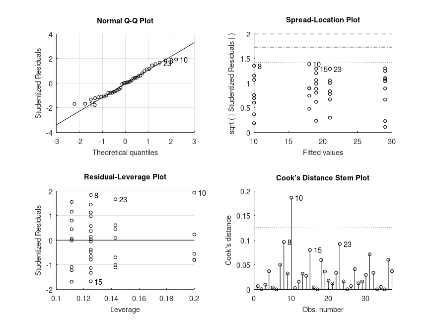 |
Demonstration 11
The following code
% Factorial design with continuous covariate. The data is from a study of
% the effects of treatment and exercise on stress reduction score after
% adjusting for age. Data from R datarium package).
score = [95.6 82.2 97.2 96.4 81.4 83.6 89.4 83.8 83.3 85.7 ...
97.2 78.2 78.9 91.8 86.9 84.1 88.6 89.8 87.3 85.4 ...
81.8 65.8 68.1 70.0 69.9 75.1 72.3 70.9 71.5 72.5 ...
84.9 96.1 94.6 82.5 90.7 87.0 86.8 93.3 87.6 92.4 ...
100. 80.5 92.9 84.0 88.4 91.1 85.7 91.3 92.3 87.9 ...
91.7 88.6 75.8 75.7 75.3 82.4 80.1 86.0 81.8 82.5]';
treatment = {'yes' 'yes' 'yes' 'yes' 'yes' 'yes' 'yes' 'yes' 'yes' 'yes' ...
'yes' 'yes' 'yes' 'yes' 'yes' 'yes' 'yes' 'yes' 'yes' 'yes' ...
'yes' 'yes' 'yes' 'yes' 'yes' 'yes' 'yes' 'yes' 'yes' 'yes' ...
'no' 'no' 'no' 'no' 'no' 'no' 'no' 'no' 'no' 'no' ...
'no' 'no' 'no' 'no' 'no' 'no' 'no' 'no' 'no' 'no' ...
'no' 'no' 'no' 'no' 'no' 'no' 'no' 'no' 'no' 'no'}';
exercise = {'lo' 'lo' 'lo' 'lo' 'lo' 'lo' 'lo' 'lo' 'lo' 'lo' ...
'mid' 'mid' 'mid' 'mid' 'mid' 'mid' 'mid' 'mid' 'mid' 'mid' ...
'hi' 'hi' 'hi' 'hi' 'hi' 'hi' 'hi' 'hi' 'hi' 'hi' ...
'lo' 'lo' 'lo' 'lo' 'lo' 'lo' 'lo' 'lo' 'lo' 'lo' ...
'mid' 'mid' 'mid' 'mid' 'mid' 'mid' 'mid' 'mid' 'mid' 'mid' ...
'hi' 'hi' 'hi' 'hi' 'hi' 'hi' 'hi' 'hi' 'hi' 'hi'}';
age = [59 65 70 66 61 65 57 61 58 55 62 61 60 59 55 57 60 63 62 57 ...
58 56 57 59 59 60 55 53 55 58 68 62 61 54 59 63 60 67 60 67 ...
75 54 57 62 65 60 58 61 65 57 56 58 58 58 52 53 60 62 61 61]';
% ANOVA/ANCOVA statistics
% Use 'anova' contrasts so that the continuous covariate is centered
[STATS, BOOTSTAT, AOVSTAT] = bootlm (score, {age, exercise, treatment}, ...
'model', [1 0 0; 0 1 0; 0 0 1; 0 1 1], ...
'continuous', 1, 'display', 'off', ...
'varnames', {'age', 'exercise', 'treatment'},...
'contrasts', 'anova');
fprintf ('ANOVA / ANCOVA SUMMARY\n')
for i = 1:numel(AOVSTAT.F)
fprintf ('F(%u,%u) = %.2f, p = %.3g for the model: %s\n', ...
AOVSTAT.DF(i), AOVSTAT.DFE, AOVSTAT.F(i), ...
AOVSTAT.PVAL(i), AOVSTAT.MODEL{i});
end
% Estimate regression coefficients
STATS = bootlm (score, {age, exercise, treatment}, ...
'model', [1 0 0; 0 1 0; 0 0 1; 0 1 1], ...
'continuous', 1, 'display', 'on', ...
'varnames', {'age', 'exercise', 'treatment'}, ...
'contrasts', 'anova');
% 95% confidence intervals and p-values for the differences in mean score
% across different treatments and amounts of exercise after adjusting for
STATS = bootlm (score, {age, exercise, treatment}, ...
'model', [1 0 0; 0 1 0; 0 0 1; 0 1 1], ...
'continuous', 1, 'display', 'on', ...
'varnames', {'age', 'exercise', 'treatment'}, ...
'dim', [2, 3], 'posthoc', 'trt_vs_ctrl', ...
'contrasts', 'anova');
% 95% credible intervals for the estimated marginal means of scores across
% different treatments and amounts of exercise after adjusting for age
% (computed by Bayesian bootstrap).
STATS = bootlm (score, {age, exercise, treatment}, 'dim', [2, 3], ...
'model', [1 0 0; 0 1 0; 0 0 1; 0 1 1], ...
'continuous', 1, 'display', 'on', ...
'varnames', {'age', 'exercise', 'treatment'}, ...
'method', 'bayesian', 'prior', 'auto', ...
'contrasts', 'anova');
Produces the following output
ANOVA / ANCOVA SUMMARY F(1,53) = 44.02, p = 0.0001 for the model: score ~ 1 + age F(2,53) = 19.74, p = 0.0001 for the model: score ~ 1 + age + exercise F(1,53) = 11.10, p = 0.00222 for the model: score ~ 1 + age + exercise + treatment F(2,53) = 4.45, p = 0.0147 for the model: score ~ 1 + age + exercise + treatment + exercise:treatment MODEL FORMULA (based on Wilkinson's notation): score ~ 1 + age + exercise + treatment + exercise:treatment MODEL COEFFICIENTS name coeff CI_lower CI_upper p-val -------------------------------------------------------------------------------- (Intercept) +84.58 +83.29 +85.86 <.001 age +0.5036 +0.1874 +0.8197 .003 exercise_1 +0.09497 -3.118 +3.308 .955 exercise_2 -9.594 -12.82 -6.364 <.001 treatment_1 +4.320 +1.715 +6.924 .002 exercise:treatment_1 +0.1550 -6.387 +6.697 .961 exercise:treatment_2 +8.218 +1.728 +14.71 .014 MODEL FORMULA (based on Wilkinson's notation): score ~ 1 + age + exercise + treatment + exercise:treatment MODEL POSTHOC COMPARISONS name mean CI_lower CI_upper p-adj -------------------------------------------------------------------------------- mid, yes - lo, yes +0.01746 -5.617 +5.652 1.000 hi, yes - lo, yes -13.70 -18.46 -8.949 <.001 lo, no - lo, yes +1.529 -3.395 +6.452 1.000 mid, no - lo, yes +1.701 -3.195 +6.597 1.000 hi, no - lo, yes -3.957 -9.130 +1.217 .502 MODEL FORMULA (based on Wilkinson's notation): score ~ 1 + age + exercise + treatment + exercise:treatment MODEL ESTIMATED MARGINAL MEANS name mean CI_lower CI_upper N -------------------------------------------------------------------------------- lo, yes +86.98 +83.41 +90.50 10 mid, yes +87.00 +83.28 +90.37 10 hi, yes +73.28 +70.48 +76.11 10 lo, no +88.51 +86.06 +91.44 10 mid, no +88.68 +86.27 +91.09 10 hi, no +83.02 +79.72 +86.48 10
and the following figure
| Figure 1 |
|---|
| 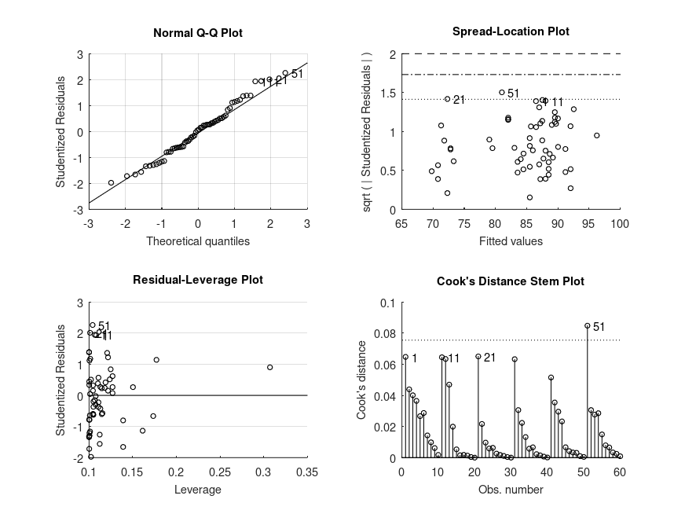 |
Demonstration 12
The following code
% Unbalanced one-way design with custom, orthogonal contrasts. Data from
% www.uvm.edu/~statdhtx/StatPages/Unequal-ns/Unequal_n%27s_contrasts.html
dv = [ 8.706 10.362 11.552 6.941 10.983 10.092 6.421 14.943 15.931 ...
22.968 18.590 16.567 15.944 21.637 14.492 17.965 18.851 22.891 ...
22.028 16.884 17.252 18.325 25.435 19.141 21.238 22.196 18.038 ...
22.628 31.163 26.053 24.419 32.145 28.966 30.207 29.142 33.212 ...
25.694 ]';
g = [1 1 1 1 1 1 1 1 2 2 2 2 2 3 3 3 3 3 3 3 3 ...
4 4 4 4 4 4 4 5 5 5 5 5 5 5 5 5]';
C = [ 0.4001601 0.3333333 0.5 0.0
0.4001601 0.3333333 -0.5 0.0
0.4001601 -0.6666667 0.0 0.0
-0.6002401 0.0000000 0.0 0.5
-0.6002401 0.0000000 0.0 -0.5];
% 95% confidence intervals and p-values for linear contrasts
STATS = bootlm (dv, g, 'contrasts', C, 'varnames', 'score', ...
'alpha', 0.05, 'display', true);
% 95% credible intervals for estimated marginal means
STATS = bootlm (dv, g, 'contrasts', C, 'varnames', 'score', ...
'alpha', 0.05, 'display', true, 'dim', 1, ...
'method', 'Bayesian', 'prior', 'auto');
Produces the following output
MODEL FORMULA (based on Wilkinson's notation): dv ~ 1 + score MODEL COEFFICIENTS name coeff CI_lower CI_upper p-val -------------------------------------------------------------------------------- (Intercept) +19.40 +18.42 +20.38 <.001 score_1 -9.330 -11.30 -7.359 <.001 score_2 -5.000 -7.877 -2.123 .002 score_3 -8.000 -11.50 -4.500 <.001 score_4 -8.000 -11.04 -4.958 <.001 MODEL FORMULA (based on Wilkinson's notation): dv ~ 1 + score MODEL ESTIMATED MARGINAL MEANS name mean CI_lower CI_upper N -------------------------------------------------------------------------------- 1 +10.00 +8.169 +11.90 8 2 +18.00 +16.01 +20.71 5 3 +19.00 +17.02 +21.06 8 4 +21.00 +19.01 +22.93 7 5 +29.00 +26.94 +30.90 9
and the following figure
| Figure 1 |
|---|
| 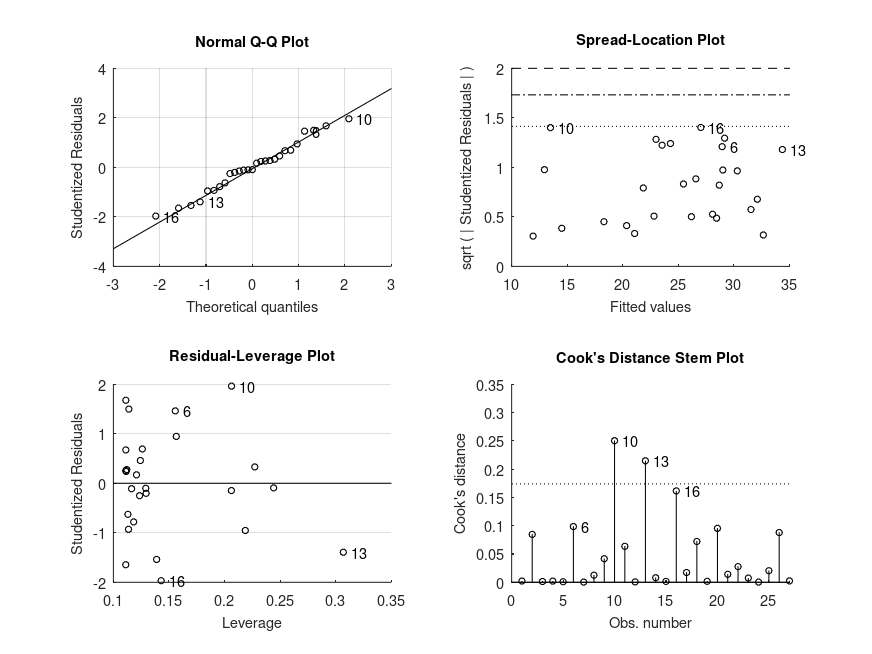 |
Demonstration 13
The following code
% Analysis of nested one-way ANOVA design using clustered resampling.
% Nested model example from:
% https://www.southampton.ac.uk/~cpd/anovas/datasets/#Chapter2
data = [4.5924 7.3809 21.322; -0.5488 9.2085 25.0426; ...
6.1605 13.1147 22.66; 2.3374 15.2654 24.1283; ...
5.1873 12.4188 16.5927; 3.3579 14.3951 10.2129; ...
6.3092 8.5986 9.8934; 3.2831 3.4945 10.0203];
clustid = [1 3 5; 1 3 5; 1 3 5; 1 3 5; ...
2 4 6; 2 4 6; 2 4 6; 2 4 6];
group = {'A' 'B' 'C'; 'A' 'B' 'C'; 'A' 'B' 'C'; 'A' 'B' 'C'; ...
'A' 'B' 'C'; 'A' 'B' 'C'; 'A' 'B' 'C'; 'A' 'B' 'C'};
[STATS, BOOTSTAT, AOVSTAT] = bootlm (data(:), group(:), 'seed', 1, ...
'clustid', clustid(:));
fprintf ('ANOVA SUMMARY\n')
fprintf ('F(%u,%u) = %.2f, p = %.3g for the model: %s\n', ...
AOVSTAT.DF(1), AOVSTAT.DFE, AOVSTAT.F(1), ...
AOVSTAT.PVAL(1), AOVSTAT.MODEL{1});
Produces the following output
MODEL FORMULA (based on Wilkinson's notation): Y ~ 1 + X1 MODEL COEFFICIENTS name coeff CI_lower CI_upper p-val -------------------------------------------------------------------------------- (Intercept) +3.835 -1.793e+14 +1.793e+14 .406 X1_1 +6.650 -7.776 +21.08 .121 X1_2 +13.65 -349.5 +376.8 .512 ANOVA SUMMARY F(2,21) = 17.08, p = 0.018 for the model: Y ~ 1 + X1
and the following figure
| Figure 1 |
|---|
| 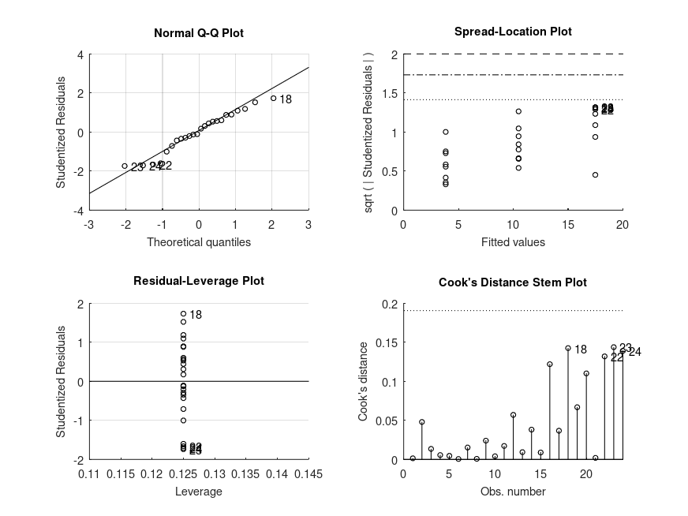 |
Demonstration 14
The following code
% Prediction errors of linear models. Data from Table 9.1, on page 107 of
% Efron and Tibshirani (1993) An Introduction to the Bootstrap.
amount = [25.8; 20.5; 14.3; 23.2; 20.6; 31.1; 20.9; 20.9; 30.4; ...
16.3; 11.6; 11.8; 32.5; 32.0; 18.0; 24.1; 26.5; 25.8; ...
28.8; 22.0; 29.7; 28.9; 32.8; 32.5; 25.4; 31.7; 28.5];
hrs = [99; 152; 293; 155; 196; 53; 184; 171; 52; ...
376; 385; 402; 29; 76; 296; 151; 177; 209; ...
119; 188; 115; 88; 58; 49; 150; 107; 125];
lot = {'A'; 'A'; 'A'; 'A'; 'A'; 'A'; 'A'; 'A'; 'A'; ...
'B'; 'B'; 'B'; 'B'; 'B'; 'B'; 'B'; 'B'; 'B'; ...
'C'; 'C'; 'C'; 'C'; 'C'; 'C'; 'C'; 'C'; 'C'};
[STATS, BOOTSTAT, AOVSTAT, PRED_ERR] = bootlm (amount, {hrs, lot}, ...
'continuous', 1, 'seed', 1, ...
'model', 'linear', 'display', 'on', ...
'varnames', {'hrs', 'lot'}, ...
'contrasts', 'treatment');
fprintf ('PREDICTION ERROR of the FULL MODEL = %.2f\n', PRED_ERR.PE(3))
% Note: The value of prediction error is lower than the 3.00 calculated by
% Efron and Tibhirani (1993) using the same refined bootstrap procedure,
% because they have used case resampling whereas we have used wild bootstrap
% resampling. The equivalent value of Cp (eq. to AIC) statistic is 2.96.
Produces the following output
MODEL FORMULA (based on Wilkinson's notation): amount ~ 1 + hrs + lot MODEL COEFFICIENTS name coeff CI_lower CI_upper p-val -------------------------------------------------------------------------------- (Intercept) +32.13 +30.27 +34.00 <.001 hrs -0.06014 -0.06841 -0.05186 <.001 lot_1 +3.973 +2.172 +5.775 <.001 lot_2 +3.466 +1.962 +4.970 <.001 PREDICTION ERROR of the FULL MODEL = 2.86
and the following figure
| Figure 1 |
|---|
 |
Demonstration 15
The following code
% Step-wise regression
sr = [11.43;12.07;13.17;05.75;12.88;08.79;00.60;11.90; ...
04.98;10.78;16.85;03.59;11.24;12.64;12.55;10.67; ...
03.01;07.70;01.27;09.00;11.34;14.28;21.10;03.98; ...
10.35;15.48;10.25;14.65;10.67;07.30;04.44;02.02; ...
12.70;12.78;12.49;11.14;13.30;11.77;06.86;14.13; ...
05.13;02.81;07.81;07.56;09.22;18.56;07.72;09.24; ...
08.89;4.71];
pop15 = [29.35;23.32;23.80;41.89;42.19;31.72;39.74;44.75;
46.64;47.64;24.42;46.31;27.84;25.06;23.31;25.62;
46.05;47.32;34.03;41.31;31.16;24.52;27.01;41.74;
21.80;32.54;25.95;24.71;32.61;45.04;43.56;41.18;
44.19;46.26;28.96;31.94;31.92;27.74;21.44;23.49;
43.42;46.12;23.27;29.81;46.40;45.25;41.12;28.13;
43.69;47.20];
pop75 = [2.87;4.41;4.43;1.67;0.83;2.85;1.34;0.67; ...
1.06;1.14;3.93;1.19;2.37;4.70;3.35;3.10; ...
0.87;0.58;3.08;0.96;4.19;3.48;1.91;0.91; ...
3.73;2.47;3.67;3.25;3.17;1.21;1.20;1.05; ...
1.28;1.12;2.85;2.28;1.52;2.87;4.54;3.73; ...
1.08;1.21;4.46;3.43;0.90;0.56;1.73;2.72; ...
2.07;0.66];
dpi = [2329.68;1507.99;2108.47;0189.13;0728.47;2982.88;0662.86;0289.52; ...
0276.65;0471.24;2496.53;0287.77;1681.25;2213.82;2457.12;0870.85; ...
0289.71;0232.44;1900.10;0088.94;1139.95;1390.00;1257.28;0207.68; ...
2449.39;0601.05;2231.03;1740.70;1487.52;0325.54;0568.56;0220.56; ...
0400.06;0152.01;0579.51;0651.11;0250.96;0768.79;3299.49;2630.96; ...
0389.66;0249.87;1813.93;4001.89;0813.39;0138.33;0380.47;0766.54; ...
0123.58;0242.69];
ddpi = [02.87;03.93;03.82;00.22;04.56;02.43;02.67;06.51;
03.08;02.80;03.99;02.19;04.32;04.52;03.44;06.28;
01.48;03.19;01.12;01.54;02.99;03.54;08.21;05.81;
01.57;08.12;03.62;07.66;01.76;02.48;03.61;01.03;
00.67;02.00;07.48;02.19;02.00;04.35;03.01;02.70;
02.96;01.13;02.01;02.45;00.53;05.14;10.23;01.88;
16.71;05.08];
[STATS, BOOTSTAT, AOVSTAT, PRED_ERR] = bootlm (sr, {pop15, pop75, ...
dpi, ddpi}, 'seed', 1, 'continuous', [1:4], ...
'model', 'linear', 'display', 'off', ...
'varnames', {'pop15','pop75','dpi','ddpi'},
'contrasts', 'treatment');
PRED_ERR
% The results from the bootstrap are broadly consistent to the results
% obtained for PE, PRESS and RSQ_pred using cross-validation:
%
% MODEL PE-CV PRESS-CV RSQ_pred-CV
% sr ~ 1 20.48 1024.186 -0.041
% sr ~ 1 + pop15 16.88 843.910 +0.142
% sr ~ 1 + pop15 + pop75 16.62 830.879 +0.155
% sr ~ 1 + pop15 + pop75 + dpi 16.54 827.168 +0.159
% sr ~ 1 + pop15 + pop75 + dpi + ddpi 15.98 798.939 +0.188
Produces the following output
PRED_ERR =
scalar structure containing the fields:
MODEL =
{
[1,1] = sr ~ 1
[2,1] = sr ~ 1 + pop15
[3,1] = sr ~ 1 + pop15 + pop75
[4,1] = sr ~ 1 + pop15 + pop75 + dpi
[5,1] = sr ~ 1 + pop15 + pop75 + dpi + ddpi
}
PE =
20.477
16.8
16.34
16.22
15.191
PRESS =
1023.8
840
817.01
811.02
759.53
RSQ_pred =
-0.040869
0.14602
0.16939
0.17548
0.22783
Package: statistics-resampling